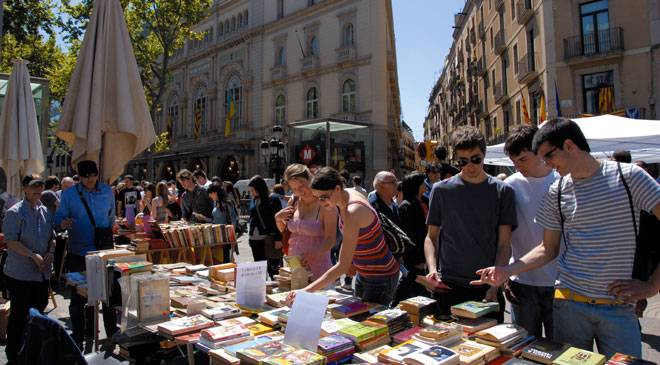

CELEBRACIÓN MUNDIAL Y LUGARES DE INTERÉS
En 1995 el Día del Libro se convierte en una FIESTA MUNDIAL. El Día del Libro fue propuesto por la Unión Internacional de Editores (UTE), y presentada por el gobierno español a la Organización de las Naciones Unidas para la Educación, la Ciencia y la Cultura (UNESCO). En 1995, se aprobó proclamar el 23 de abril de cada año el "Día Mundial del Libro y del Derecho de Autor".
Si deseas sentir la tradición de la Fiesta del Día del Libro, iniciada en 1926, puedes iniciar tu paseo por la Rambla de Catalunya de Barcelona, miles de comercial-paradas de libreros y floristas envuelven la ciudad de cultura a través de los libros, puedes demostrar y sentir el amor de personas queridas cuando recibes o regalas una rosa, también se reúnen las asociaciones, instituciones, bibliotecas, escritores de todo el mundo firmando sus obras, ilustradores, medios de comunicación,... te acompañan por las calles de la ciudad.
Existen miles de lugares de interés en más de 100 países para celebrar el Día Internacional del Libro y los Derechos de Autor. Por ejemplo, en Madrid realizan más de 600 actos el 23 de abril, preámbulo de la Feria del Libro con 15 días de duración. Ciudad de México, Caracas, Bogotá, Santiago, Valencia, La Victoria, Buenos Aires, Maracaibo, Barquisimeto, Quito, Managua, Maracay, New York, Los Ángeles, Medellín, Ciudad de Guatemala, Valparaiso, muchas ciudades Europeas, Americanas, Asiáticas, Africanas, incluso en Vietnam se celebra a escala nacional..., celébralo en miles de localidades más de todo el mundo, encontrarás actos del Día del Libro para disfrutar de la fiesta mundial. ¡Infórmate en tu localidad!